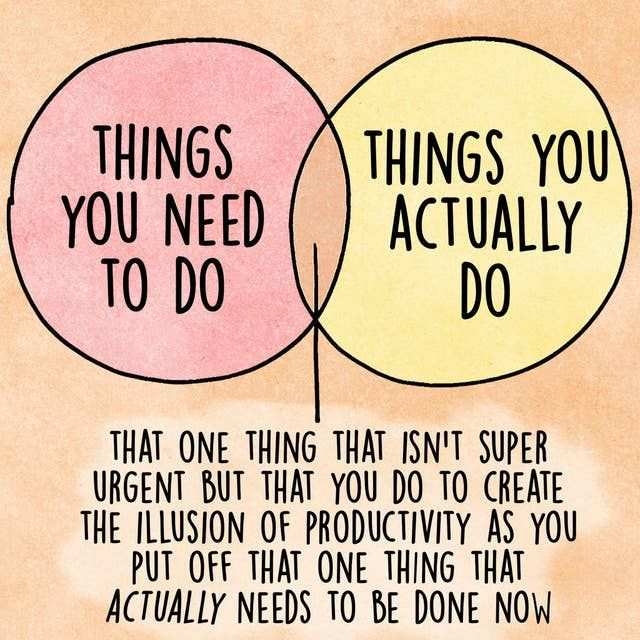

A Day in the Life of a Professional Procrastinator
If you've ever wondered what it's like to be a professional procrastinator, then you've come to the right place! I'm going to share with you what a typical day for me looks like. If you've ever struggled with procrastinating, feel free to take notes on the methods I use.

My day begins with lots of opportunities to embrace my true calling as a professional procrastinator. I must say, it takes immense skill and dedication to perfect the art of putting things off until the last possible moment. But fear not, for I am a master of this fine craft, and today's adventures in procrastination did not disappoint.
Morning arrived, and with it came a flood of tasks demanding my attention. The world expected me to be productive, to tackle the mounting pile of responsibilities. But little did they know, I had other plans—far more exciting ones involving cat videos, endless social media scrolling, and maybe a nap or two.
My journey began in the realm of email. A labyrinth filled with urgent requests and unread newsletters. Alas, instead of responding promptly, I engaged in a fierce battle of deleting spam messages and meticulously organizing my inbox. A task of utmost importance, or so I convinced myself.
Next came the daunting assignment that had been haunting my to-do list for days—the dreadful report. As I sat at my desk, staring at a blank document, I marveled at the power of procrastination. Surely, creativity and inspiration would strike me in the eleventh hour, like a lightning bolt of brilliance. So, I decided to take a detour.
I embarked on an expedition through the mystical lands of distraction, a journey fueled by endless cups of coffee. First stop—YouTube. The land of captivating videos, where minutes turned into hours, and productivity was but a distant memory. I ventured into the depths of the "Related Videos" section, hopping from cute animal compilations to bizarre conspiracy theories, all in the name of research, of course.

Just as I was about to delve into the captivating world of cat acrobatics, a pang of guilt struck me. The report! It haunted my thoughts like a ghostly reminder of my imminent deadline. With a newfound determination, I resolutely clicked open the document. But alas, my fingers were possessed by the spirits of procrastination, and they led me astray once again.
Suddenly, the urge to clean my workspace became irresistible. How could I possibly produce quality work amidst the chaos of scattered stationery and post-it notes? Thus began the great cleaning crusade, transforming my desk into an immaculate shrine of procrastination.
Time flew by like a mischievous imp, and the evening sun began its descent. Panicked, I returned to my report, fueled by the adrenaline of impending doom. But lo and behold, my masterpiece materialized effortlessly. The words flowed like a river, as if the universe itself conspired to ensure my triumph.
In the end, I submitted my report, triumphant and filled with a sense of accomplishment that only a procrastinator could understand. The sweet taste of victory mixed with the bittersweet realization that I had danced with danger, teetering on the edge of disaster.
So, another day has come to an end in the life of a professional procrastinator. Tomorrow brings new adventures, new tasks to postpone, and new excuses to conjure. For I am a procrastinator by heart, and with each passing day, I perfect my craft, pushing the boundaries of deadlines and embracing the thrill of the eleventh hour.
(Also, a big thank you to ChatGPT for helping me write this blog because I would have never finished this since I am so skilled at procrastination.)